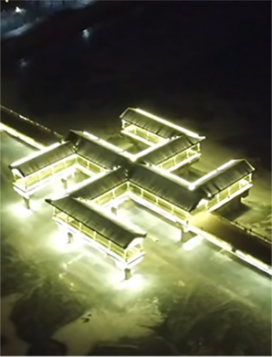

乾阳步行桥
一个夜晚可以发光的“卍”型桥
小布达拉宫
普陀宗乘之庙，俗称小布达拉宫
鸡冠子山
五根粗大的红色岩柱，构成了鸡冠的雄姿。
双塔山
鬼斧神工，至今还是一个迷团
承德，是河北省地级市，河北省政府批复确定的河北国际旅游城市、连接京津辽蒙的区域性中心城市。截至2019年，全市下辖3个区、4个县、代管1个县级市和3个自治县，总面积39519平方千米，常住人口358.27万人，城镇人口186.35万人，城镇化率52.07%，全市实现社会消费品零售总额640.7亿元。
承德地处中国华北地区、河北省东北部，南邻京津，北接赤峰和锡林郭勒，东西与朝阳、秦皇岛、唐山、张家口相邻，是连接京津冀辽蒙的重要节点，具有“一市连五省”的独特区位优势，是国家甲类开放城市，中国普通话标准音采集地、中国摄影之乡、中国剪纸之乡。
承德是首批国家历史文化名城，1703年清康熙修建避暑山庄，成为清王朝的第二个政治中心；1723年设热河厅；1733年雍正取“承受先祖德泽”之义；赐字“皇承天德”释义先皇秉承天地化育万物的恩德；
设承德直隶州，始称“承德”；民国和解放初期为原热河省省会；1955年，热河省建制撤销，承德划归河北省，为省辖市。承德的避暑山庄及其周围寺庙是中国十大风景名胜、旅游胜地四十佳、国家重点风景名胜区，被联合国教科文组织批准为世界文化遗产，也是国家首批世界文化遗产。
2012年，承德被评为中国“十大特色休闲城市”。2016年11月，承德市被中华人民共和国国家旅游局评为第二批国家全域旅游示范区。2017年10月，承德市入选国家森林城市。 2017年12月，获得“厕所革命优秀城市奖”。